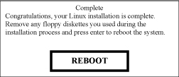

Proprietary to General Electric Company
Direction 5670006, Rev# 1
Module Version 20.0, Version Date 3/22/11
Proprietary to General Electric Company |
| Condition | Reference | Effectivity |
|---|---|---|
If this is not a new installation, perform a SaveInfo of all system settings before beginning the software installation. | - | - |
When conducting a software reinstallation, write down all the IIP configuration data to speed up the InSite process. (It is not saved as part of the SaveInfo procedure.) The data can be accessed from the Common Service Desktop → Configuration → Guided Install → FE Mode → Service SW/InSite → Config InSite IIP. Click on each IIP Configuration tab, and record the data. This data can be manually entered after the software application load. | - | - |
| ||||
The software load can be corrupted if the following conditions
are not met:
| ||||
Insert the Linux OS Software DVD into the DVD-ROM drive of the host computer.
Reboot the host computer.
At the boot prompt, type the appropriate code for the keyboard in use, then press <Enter>:
Once the installation is complete, ensure the disk is removed from the drive. Do not insert the Applications DVD at this time!
When the OS software is loaded, a Complete and Reboot screen (shown below) displays indicating that the system needs to be rebooted. Press <Enter> to reboot the PC.
Illustration 3: Complete and Reboot

When a terminal window displays after a couple of minutes, the OS software load is complete. Continue to the next section.
Insert the MR Applications DVD into the DVD-ROM drive of the Host computer.
When the Warning window (shown below) displays, click [Run Command] to confirm the run.
When the Locale Selection window (shown below) displays, select the proper locale and language, then click [OK].
The Guided Install screen will display. When the Message screen (shown below) displays indicating the improvements made from the previous software version, click [OK] to continue.
When the Guided Install Configuration Media Dialog window displays, confirm the type of media to use to restore the Guided Install Configuration (shown below.)
| ||||
| The last installed GUI configuration can only be installed if it was previously saved using Save GI Configuration. | ||||
| NOTE: | If the host computer has a single DVD drive, complete
the following steps to perform a SaveInfo:
|
Insert the SaveInfo DVD. Verify that the correct values are restored by checking each tab in the next step. Click [OK] to reinstall the last GUI installation configuration values.
Select the Basic Configuration tab shown below. Verify that all values under this tab are configured properly, including Time/Date.
If the Guided Install configuration was successfully restored from the DVD, it is not necessary to change any of the parameters.
Check the parameters on the Verification tab, and confirm there are no failures. If there are failures, make the necessary changes.
Make sure all required configuration tabs are filled out (not in any specific order) before continuing. The Verification tab lists any formatting errors as well as current settings.
Set the Scan Range to proper value by selecting the System Configure option under the Basic Configuration option. If the length of the Magnet Room is less than 21.5 ft. (6.5 m), select [Short]. If the length is greater than 21.5 ft. (6.5 m) select [Long]. (See the illustration below.)
| ||||
| If loading software for the first time on a Host PC, the initial
boot up will fail. Manually enter the Term Server information (found
on the front of the terminal server in the PGR cabinet) on the Network
Info screen shown in Illustration 9. Example format: 20:2D:90:22:44. Use colons between two digits; letters are case sensitive. | ||||
Proceed to the Verification tab shown in Illustration 11.
Look for any items with a Fail status. Go to the tab with the error and correct it.
Click [Install] to open the Verification tab again.
If all entries pass verification at this point, click [Install Software] to begin the MR Applications load. If the time and time zone are correct, click [Confirm] to proceed. (Shown below.)
Once the MR Applications load is complete, a confirmation message (shown below) displays. Click [OK] to close the window.
The GUI returns to the Guided Install window. Under the Utilities tab in the left navigation, select Save/Restore to open the Save/Restore screen shown below.
If the DVD with the saved configurations is not available, go to each tab in the Install GUI and complete all system information manually. A [Help] button that provides information on the required data and its format is available on each tab.
If the DVD with saved configurations is available, click [Restore Information], and select the proper medium from the dialog box. (See Illustration 8.)
When the Restore Info Dialog box (shown below) displays, click Restore all files automatically, then click [Continue].
A RestoreInfo in Progress window scrolls filenames as they are restored.
Select All to restore all items, and click [Update]. When the update is finished, click [Quit].
Click [Yes] when the Quit Tool message (shown below) displays.
Reboot the system, by selecting [Desktop] on the left corner of the monitor, then [Logout], [Restart the computer], and [OK].
Log in to the system as root with operator for the password.
Click [Yes] to start Guided Install.
Remove the MR Applications DVD.
Proceed to the next section.
From the Guided Install interface left navigation menu, select VRE Configuration.
When the VRE Configuration screen (shown below) displays, verify VRE Blades are properly installed and all hardware connections are in place, including Ethernet connections.
Click [Configure VRE Blades] shown in Illustration 20.
When the Information window (shown below) displays, click [Continue] to confirm that the VRE Gigabit Switch Ethernet and Host Ethernet connections (shown in Illustration 22) are complete and correct.
When the VRE window asks for the number of connected VRE Blades, select the proper number of Image Compute Nodes (ICNs) based on the number of ICNs found in the PGR cabinet: 1 or 2, and click [OK].
A VRE Configuration Progress Details window (shown below) will display.
When VRE configuration is complete, a configuration Success message is displayed. Click [OK] to continue.
If the site has IRM (In Room Monitor), select IRM Installation in the Guided Install window, and click the [Install IRM Software] shown below.
If this is the first or initial software load, perform a Term Server Reset by executing the following steps. Otherwise, proceed to Step 8.
Remove the power connector from the Term Server (shown below).
Press and hold the small square Reset button (next to the power jack), and connect power to the Term Server while continuing to depress this button.
Continue depressing the Reset button for 20 seconds.
Verify communication between the Host PC and Term Server:
To stop the test, press <Ctrl+C>.
When the Information window confirms that the configuration is complete, click [OK].
Load Service Software: See Loading or Deleting Proprietary Software.
Load Service Methods documentation: See Installing Service Methods CD onto System.
| ||||
The software load can be corrupted if the following conditions
are not met:
| ||||
Insert the Linux OS Software DVD into the DVD-ROM drive of the host computer.
Reboot the host computer.
At the boot prompt, type the appropriate code for the keyboard in use, then press <Enter>:
Once the installation is complete, the system reboots to a graphical user login prompt. Log in as root with operator for the password.
The OS disc will be automatically ejected. Remove it and continue to the next section.
Insert the MR Applications DVD into the DVD-ROM drive of the Host computer. (For HP8400 computers, the Operating System DVD must be placed in the read-only, top drive.)
After inserting the MR Applications DVD, a pop-up displays indicating that the MR Applications Software Installation is in progress. If this pop-up does not display, right click on the desktop and choose the Install MRApps option from the menu to begin installation.
After the HDD Preparation Complete pop-up displays, click [OK]. Guided Install will install and launch.
When the Locale Selection window displays, select the proper locale and language, and click [OK].
The Guided Install screen will display. When the Message screen (shown below) displays indicating the improvements made from the previous software version, click [OK] to continue.
The MRApps DVD will be automatically ejected. Remove it from the drive.
When the Guided Install Configuration Media Dialog window displays, confirm the type of media to use to restore the Guided Install Configuration.
| ||||
| The last installed GUI configuration can only be installed if it was previously saved using Save GI Configuration. | ||||
Verify that the correct values are restored by checking each tab in the next step. Click [OK] to reinstall the last GUI installation configuration values.
Select the Basic Configuration tab shown below. Verify that all values under this tab are configured properly, including Time/Date.
If the Guided Install configuration was successfully restored from the DVD, it is not necessary to change any of the parameters.
Check the parameters on the Verification tab, and confirm there are no failures. If there are failures, make the necessary changes.
Make sure all required configuration tabs are filled out (not in any specific order) before continuing. The Verification tab lists any formatting errors as well as current settings.
Set Scan Range to proper value by selecting the System Configure option under Basic Configuration.
Set the ISO Vector Z to the proper value on the Hardware Configure screen shown below.
| ||||
| If loading software for the first time on a Host PC, the initial
boot-up will fail. Manually enter the Term Server information (found
on the front of the terminal server in the PGR Cabinet) on the Network
Info screen shown in Illustration 36. Example format: 20:2D:90:22:44. Use colons between two digits; letters are case sensitive. | ||||
Proceed to the Verification tab (shown below).
Look for any items with a Fail status. Go to the tab with the error and correct it.
Click [Install] to open the Verification tab again.
If all entries pass verification at this point, click [Install Software] to begin the MR Applications load. If the time and time zone are correct, click [Confirm] to proceed.
A pop-up message will display (shown below). Remove the SaveInfo disc from the DVD-ROM drive and insert the MRApps DVD.
Once the MR Applications load is complete, a confirmation message displays. Click [OK] to close the window.
The GUI returns to the Guided Install window. Under the Utilities tab in the left navigation, select Save/Restore to open the Save/Restore screen.
Click [OK] to open the Restore Manager dialog window shown below.
Select All to restore all items, and click [Update]. When the update is finished, click [Quit.]
Click [Yes] when the Quit Tool message displays.
When the message shown below confirms that a log file was created. Click [OK] to finish.
Reboot the system by selecting Desktop in the left corner of the monitor, Logout, Restart the computer, and click [OK].
Log into the system as root with operator for the password.
Click [Yes] to start Guided Install.
Remove the SaveInfo disc.
Proceed to the next section.
From the Guided Installation interface left navigation menu, select VRE Configuration.
When the VRE Configuration screen displays, verify the VRE Blades are properly installed and all hardware connections are in place, including Ethernet connections.
Click [Configure VRE Blades].
When the Information window displays, click [Continue] to confirm that the VRE Gigabit Switch Ethernet and Host Ethernet connections are complete and correct.
When the VRE window asks for the number of connected VRE Blades, select the proper number of Image Compute Nodes (ICNs) based on the number of ICNs found in the PGR cabinet: 1 or 2, and click [OK].
| ||||
| A pop-up message will prompt the user to insert the VRE OS disk for copying the ICN OS contents onto the hard drive. | ||||
Insert the Linux OS Software DVD into the DVD-ROM drive of the Host computer and click [OK]. VRE configuration progress details will display while ICN OS contents are being copied.
The Linux OS DVD will be automatically ejected. Remove it from the DVD-ROM drive.
| NOTE: | If the VRE configuration continues to fail, refer to VRE Troubleshooting. |
When VRE configuration is complete, a configuration Success message is displayed. Click [OK] to continue.
If the site has an In Room Monitor (IRM), select IRM Installation in the Guided Install window, and click the [Install IRM Software] button.
If this is the first or initial software load, perform a Term Server Reset by executing the following steps. Otherwise, proceed to Step 9.
Remove the power connector from the Term Server.
Press and hold the small square Reset button (next to the power jack), and connect power to the Term Server while continuing to press this button.
Continue pressing the Reset button for 20 seconds.
Verify communication between the Host PC and Term Server:
Open a C-shell terminal.
Ping the ts1 address by typing: ping hostname-ts1 (where hostname is the hospital name), and press <Enter>.
To stop the test, press <Ctrl+C>.
When the Information window confirms that the configuration is complete, click [OK].
Load the Service software by referring to Loading or Deleting Proprietary Software.
Load the Service Methods documentation by referring to Installing Service Methods CD onto System.